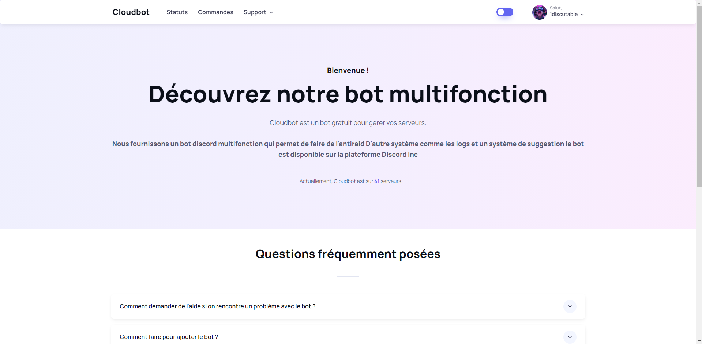
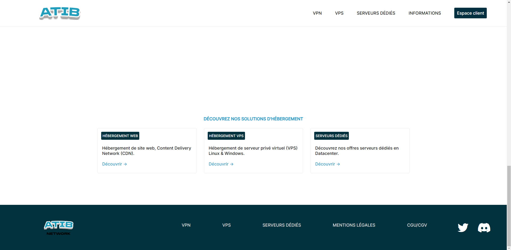

Projects
Cloudbot
Cloud Bot is a Discord bot built with Discord.js, Node.js, Express, and MongoDB for advanced server management and moderation.
ATIB
ATIB Network was a Belgian VPS provider, offering dedicated servers with performance and reliability, utilizing HTML and CSS.
Nitro Sniper (educational purposes)
This is a Multifunction Selfbot allowing you to snipe nitros when you are absent during server drops.